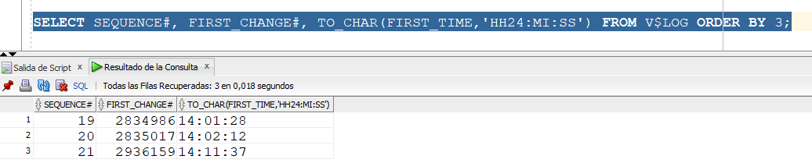
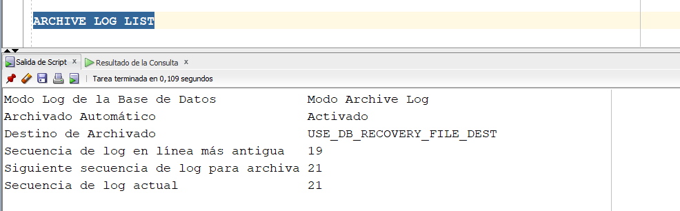
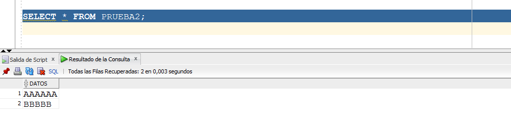
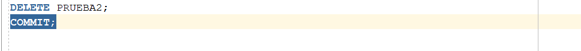
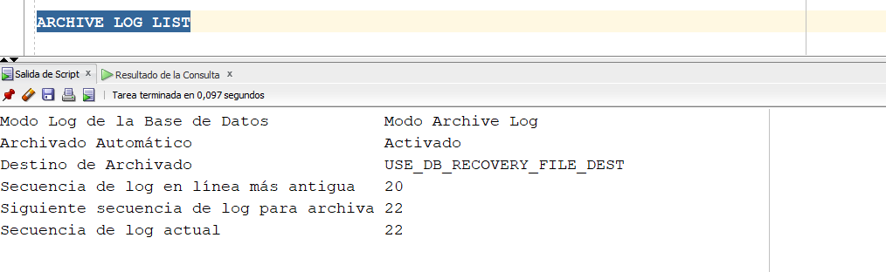
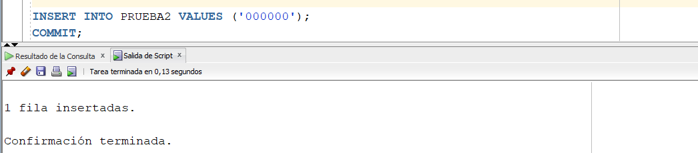
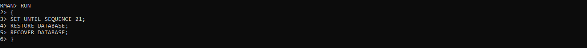
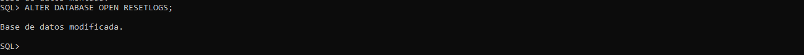
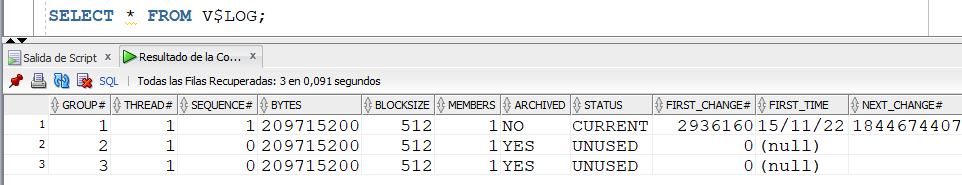
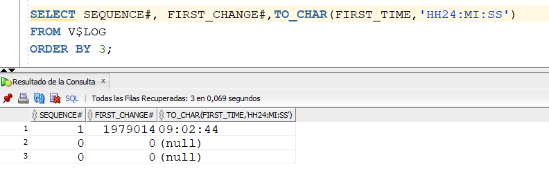

A veces queremos restaurar la base de datos a un tiempo pasado específico, un tiempo t. Obviamente, al restaurar de esta manera, lo que se haya hecho en la base de datos depues del tiempo t, no quedará restaurado.
Miremos el siguiente SELECT. Con este SELECT miramos el primer SCN que ha habido en cada Redo Log File (FIRST_CHANGE#) y también fecha y hora del primer cambio hecho en cada Redo Log File.

Al darle ARCHIVE LOG LIST, podemos ver cual es el Redo Log File actual. En este caso, el de secuencia 21.

Ahora, conectémonos con el usuario de trabajo y ejecutemos el siguiente SELECT. Vemos que la tabla contiene algunos datos.

Borremos todos los datos de la tabla que acabamos de consultar.

Si volvemos a ejecutar el ARCHIVE LOG LIST, es posible que no hayan cambios porque estamos trabajando en un entorno monousuario, pero en la vida real s+i pudo haber cambiado. Por eso, vamos a forzar un SWITCH LOGFILE. Al volver a consultar, vemos que ya el Redo Log File en uso es el de secuencia 22.

Ahora, a la tabla PRUEBA2 insertemosle una tupla. Recordar que dicha tabla no tiene tuplas actualmente, todas fueron borradas.

Supongamos que queremos restaurar hasta el punto anterior al DELETE de todas las tuplas de la tabla PRUEBA1, es decir, debe restaurar las filas borradas pero no la que acabamos de insertar.
Para hacer este tipo de restore, debo estar en modo MOUNT, no en modo OPEN.
Luego, para hacer la restauración, en RMAN hago lo siguiente. Si le hemos seguido el hilo al ejemplo, entenderemos que la tabla PRUEBA2, con sus dos tuplas, estaba en el Redo Log File de secuencia 21. Por eso, le decimos que restaure hasta ese punto del tiempo.

Luego abrimos la base de datos, pero lo debemos hacer con la cláusula RESETLOGS. Esta cláusula hace un "reset" de los Redo Log Files, volviendo inútiles todos los backups que hayamos hecho anteriormente. Por eso, despues de una apertura de la base de datos con esta cláusula, es imperativo hacer un backup completo, para no quedar desprotegido.

Otra manera de ver el efecto de RESETLOGS es ejecutando el SELECT sobre V$LOG. Podemos observar que la secuencia volvió a empezar en 1.

También se ve ejecutando lo siguiente:

Entonces, es urgente hacer un BACKUP DATABASE en RMAN.
Por último, miremos el contenido de la tabla PRUEBA2. Ahi estan los datos que se habian borrado, y que estaban antes de hacerle el DELETE. Acabamos de restaurar la base de datos a un punto anterior del tiempo.